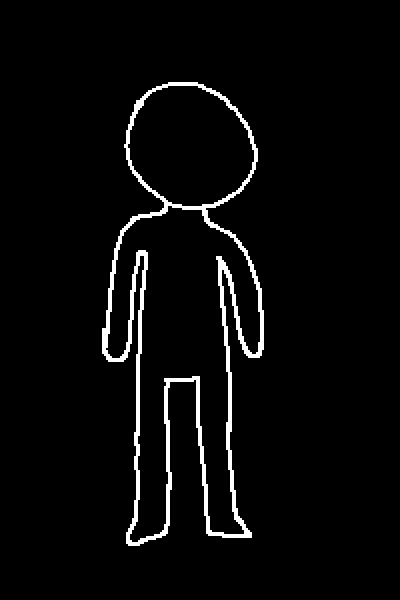

Act I Chapter II
==>
We begin with humans, homo sapiens as you may know which is Latin for “wise man”. Humans were the first species to populate this planet, by far.
They’re about 27% of the total population and basically the most boring of the eight races. Imagine living your whole life with no natural magic potential.
The 2nd species is psychics, scientific name homo praeditus, which is fancy for “gifted man”. They’re the next dominant species at 20%, and any powers involving the mind, they got it.
The better the rarer. Also, not all psychics are good in a certain area. Think about it as “skill points” in a game randomly spent in different categories, like telekinesis, telepathy, mind control, etcetera. Take our kids as an example: Nexus is better at mind stuff, whereas Atom is more inclined towards physical powers.
They look the same to humans, but their veins glow if they exert themselves too much. See the gal in the picture (who isn’t Nexus, by the way. That’s a highly colorist assumption. These are all just random people. Why would you think the people in any of these pictures are narratively significant anyway?)
Since psychics rely on magic to sustain their body with the necessary energy to have heightened abilities, they are semi-magical beings. In the group of 16, Nexus, Atom, and Zenith are psychics. Oh, and let's not forget Haelfheim.
The 3rd species is ghosts, or homo perspicuous (“bright man”), and constitute 16% of the world population. They’re the only species to have 2 ‘bodies’, their physical form and their ghost form. Both forms look the same, except the ghost form doesn’t have pupils, and is translucent.
Ghosts’ physical form acts as a separable shell for their ghost form, the latter of which is more powerful. The ghost form can be ejected out of the physical form at will, and when isolated can fly and phase through thin enough physical objects (like brick walls). When in this form, they can also ‘possess’ other people and even take control over their body, unless a) their mind is stronger than the ghost’s, or b) that person is a shadow.
However, the ghost form only has these advantages in the presence of light. If there is not enough light, the ghost form must possess a physical body, or they will forcibly remain completely invisible. Technically, a ghost can just ditch its physical form forever and function perfectly as just a ghost form, although that would mean ceasing physical contact from most of the world.
They rely on magical energy to sustain their ghost form, so they are highly magical beings. Among the kids, Moran, Candell, and Aurora are ghosts. Naphthaline too.
Now, on to savages, or homo fortis (strong man). They’re about 12% of the population and possess various physical abilities (just like psychics with their mental abilities).
Their “skill points” are spent on areas like strength, speed, reflexes and agility, and like psychics, some are better at some areas than others.
They pretty much look the same as regular humans, and are exactly like psychics when it comes to being semi-magical beings. Only Adelphi and Kranyon are savages.
The 5th species is reapers (homo vita / life man), who were named after the mythological Grim Reaper by literally winning a war by sucking the souls out from the enemy’s bodies. They’re quite a minority at 9% of the world population, and look the same as humans and savages.
While the psychics have powers of the mind, and savages have powers of the body, reapers have powers of the soul. They can control the life essence in their own body and even others, and as a result also gain some control on others’ emotions. The “skill point” analogy still applies here, and additionally they are classified as semi-magical beings along with psychics and savages. Among the 16 kids, only Cassiopeia and Arwen are reapers.
Next we have vampires. Vampires are classified as homo sanguis (blood man), and constitute 8% of the population. They always look a bit pale, paler than regular humans and sometimes on par with ghosts’ physical forms.
Vampires are… well, vampires. They have fangs, which vary in length and thickness, and also get bigger through puberty. Fun fact, they’re also a naturally nocturnal species.
Although they don’t look the part, vampires are actually strongly magical beings. Upon becoming or being born as a vampire, the heart stops. So technically, they’re dead. They rely completely on magical energy to sustain life. Interestingly, a side effect of this magical energy is that they grow to be unusually strong, despite generally looking thin.
That’s why they like drinking blood, especially the blood of magical beings. In this case the blood is also rich in magical energy, which a vampire’s body would gladly take. In fact, blood is one of the most fulfilling foods a vampire can take, even having the effect to keep them awake, like caffeine.
As you already probably know, only Galinda and Fenferra are vampires.
The 7th species is the undead, (homo post-corporis / after-body man), constituting 5% of the world population. As the name suggests, they are also technically dead, but their physical bodies themselves are mainly composed of magical energy, making them one of the most reliant on magical energy. However, they are only classified as semi-magical, because the undead have evolved to recover magical energy from regular food. So they can sustain their energy needs quite easily.
The undead are split into mostly 3 types: ‘skeletons’, ‘franks’ and ‘lycanthropes’.
‘Skeletons’ are slightly paler than the average human, and have slightly rougher and harder skin. The only original physical matter in their body is their skeleton (hence the name).
‘Franks’ are named after the famous book ‘Frankenstein’ by Mary Shelley, although real ‘franks’ aren’t as hideous. They have accelerated growth, and grow to be significantly bigger in size compared to all other species and subspecies, as their original physical matter is their flesh.
‘Lycanthropes’ are significantly rarer than the other two subspecies, and are named after the mythical werewolves. Their appearance possesses many animal features, typically that of wolves and cats (e.g. large animal ears, tails and sometimes fur). Their original physical matter is usually hair.
The undead can’t get sick from physical pathogens, nor can they be negatively affected by radiation. In the group, only Nefferin and Onnyx are undead. Fun fact, Abigaile is a lycanthrope.
The 8th and last species are shadows (homo nox / night man), and are also the rarest species, making up just 3% of the world. They’re like ghosts, but the opposite. Their abilities activate mostly in dim/no light conditions, and trying to do so otherwise is extremely painful.
When in the dark, they can activate their abilities by dissolving their body into a uniformly black, semisolid sludge, which means the shadow can change their shape however they want.
This sludge doesn’t stick to anything but itself, not even other shadows, which also means friction is greatly reduced if they so desire, and they can very quickly glide across surfaces in the dark if they want to.
Shadows also have their own form of ‘possession’. The shadow can force themself into the body of another person (as long as they are not a ghost or another shadow), although as the sludge is still part physical, this process must be done delicately, or it would be incredibly painful for the host. As the two consciousnesses merge, the shadow disappears into the body of the host, and is able to take control over the host’s body unless the mind of the person is stronger than the shadow’s.
In the presence of light, this sludge will be forcefully changed back to the shadow’s regular appearance and shape, unless the shadow is inside a person. However, upon choosing to exit the host’s body, they will change into their regular form again.
Shadows are strongly powerful, highly magical beings, which is why the chances of their birth are rare. Like the undead, they also possess the ability to recover magical energy from regular food, which results in shadows having unusually high metabolic rates, and as a result, Samsara and Tenebris (and also Naphthaella) have a natural liking for food.
Oh hey, we’re done. You were only shown the important bits, pinky promise. The kids had to read it out and it took them about 20 minutes. That’s how long-winded the original author was. Anyway, let’s continue, shall we?